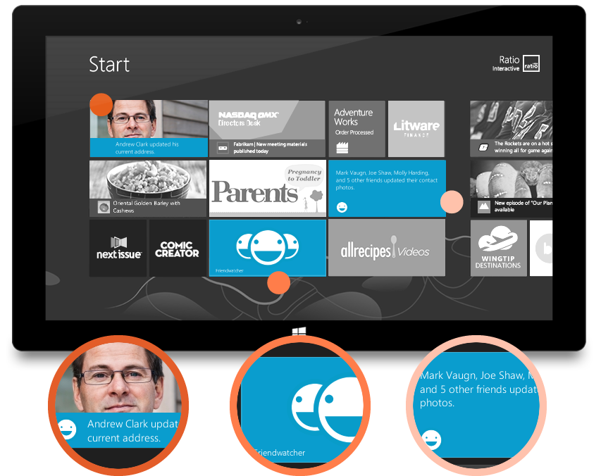
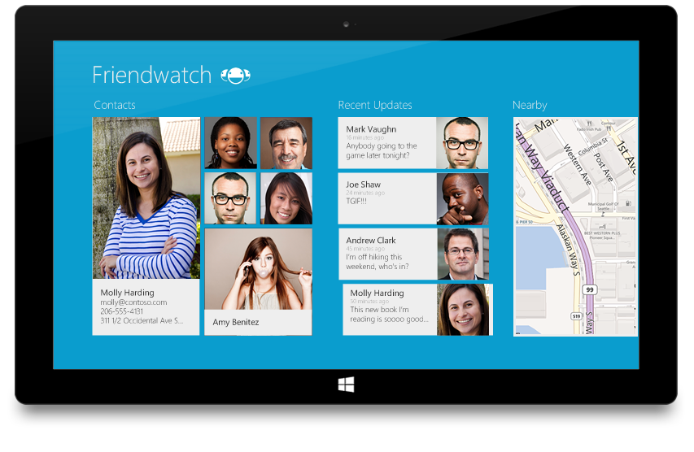
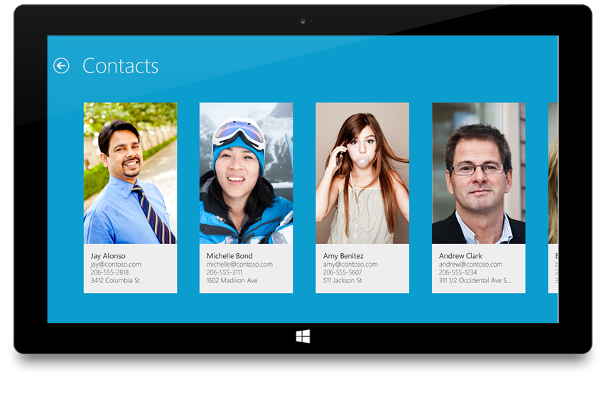
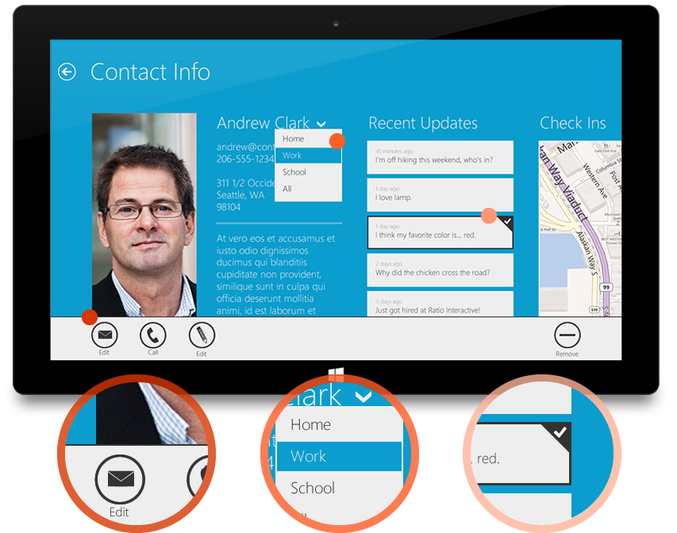

1. START SCREEN
The start screen, sometimes referred to as the dashboard, is where all of your Windows 8 content lives. From here you can launch an app or enter desktop mode.
Primary Tile
An app's tile is its default representation on your start screen. It's static - usually just the app's name, logo, or both.
Live Tile
An app's live tile presents fresh, relevant content to a user on the start screen, even when the app is not running.
Secondary Tile
A secondary tile is a live tile that links directly to a specific, non-default section of an app, based on the content shown on the tile.
2. SPLASH SCREEN " EXTENDED SPLASH SCREEN
The splash is displayed after an app is launched but before it has time to load. It is very basic (a single, 620x300 px image on a solid background) but provides feedback to the user that something is happening, even though the app is not displayed yet. You can implement an extended splash screen if you need to extend the load time or provide any preface to the app experience.
3. HOME VIEW
The home view is the top level of a Windows 8 app. All of the app's main content hubs are shown. It is sometimes referred to as "Hub View" or "Hub Page."
Group
A group is a group of related content tiles.
Hub
The word "hub" is sometimes used casually to refer to the same thing as a group.
Tiles
A tile is a content item within a group.
Header
A header is the title of a hub. Selecting it will enter the collection view for that hub.
Panorama
The entire collection of groups that extends well beyond the edge of the screen is sometimes called a panorama.
4. COLLECTION VIEW
The collection view is the second level of a Windows 8 app and shows content for a hub selected from the hub view.
Back Button
The back button always returns the user to the screen they were on previously.
5. SEMANTIC ZOOM
Semantic zoom provides a way of condensing a long page of content so that it is possible to quickly move between sections that are normally far apart.
6. DETAIL PAGE
The detail page is the most specific level of a Windows 8 app’s architecture and shows the most information about a certain item.
7. INTERACTING WITH WIN 8
There are a number of new gestures to be aware of when working in Windows 8. Knowing these new terms and their intended use will allow you to properly interact with any app in Windows 8.
App Bar
A group is a group of related content tiles.
Flyout
A flyout is a lightweight popup that’s used to temporarily show UI related to what the user is doing.
Swipe Select
Swiping can be used to quickly select multiple pieces of content which are then actionable via the app bar.